<!DOCTYPE lake>
<h2 data-lake-id="ZJhDB" id="ZJhDB"><span data-lake-id="u70f9112e" id="u70f9112e">TFT屏幕介绍</span></h2><p data-lake-id="u290857e7" id="u290857e7">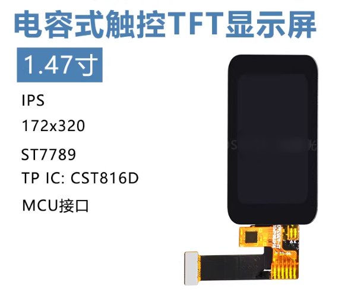</p><p data-lake-id="ua51e48ed" id="ua51e48ed" style="text-align: left"><span data-lake-id="ub14095a4" id="ub14095a4">本节我们所要驱动的屏幕是由两部分内容所组成</span></p><ul list="u73bb2c52"><li data-lake-id="u37c9de99" fid="u6c0c274c" id="u37c9de99" style="text-align: left"><span data-lake-id="u24d28513" id="u24d28513">显示部分驱动是st7789</span></li><li data-lake-id="uf71b996d" fid="u6c0c274c" id="uf71b996d" style="text-align: left"><span data-lake-id="uaec97dc5" id="uaec97dc5">触摸部分是cst816d芯片</span></li></ul><p data-lake-id="u742b1a82" id="u742b1a82" style="text-align: left"><span data-lake-id="u6aeabae3" id="u6aeabae3">切记触摸屏是由两部分所组成，一部分负责显示，另外一部分负责触摸</span></p><p data-lake-id="ucea1a694" id="ucea1a694" style="text-align: left"><span data-lake-id="u41876dc8" id="u41876dc8">​</span><br/></p><p data-lake-id="ub51ec172" id="ub51ec172" style="text-align: left"><span data-lake-id="ube47dd92" id="ube47dd92">通常我们在显示模块的时候， 卖家都会提供相应的驱动代码，下面我就列出gd32相关示例代码</span></p><p data-lake-id="u8d9fc529" id="u8d9fc529" style="text-align: left"><a class="yuque-card-link" href="../../_assets/0ef971bf5d19ad142569de1e.zip">gd32驱动代码.zip</a></p><p data-lake-id="u9a262db7" id="u9a262db7" style="text-align: left"><span data-lake-id="u176c66e6" id="u176c66e6">在我们调试显示模块的时候， 我们应当首先确保屏幕的背光是否亮起。</span></p><p data-lake-id="u27a46d9b" id="u27a46d9b" style="text-align: left"><strong><span data-lake-id="u909deb99" id="u909deb99">当背光亮起的时候，可以验证我们的排线是否连接正确</span></strong></p><p data-lake-id="u9b6c12ac" id="u9b6c12ac" style="text-align: left">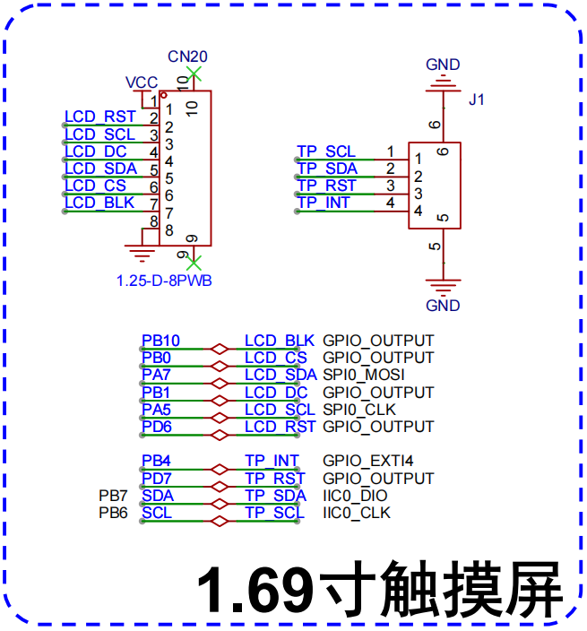</p><p data-lake-id="u6d6fddbe" id="u6d6fddbe" style="text-align: left"><span data-lake-id="u2008effb" id="u2008effb">下面是驱动代码在main.c文件中的调用示例，注意移植的时候，需要将响应的SPI,GPIO端口改成当前自己的开发板对应接口</span></p><p data-lake-id="u95137bee" id="u95137bee" style="text-align: left"><span data-lake-id="u43e80af3" id="u43e80af3">​</span><br/></p><p data-lake-id="u7b77b676" id="u7b77b676" style="text-align: left"><span data-lake-id="u0b8e84fa" id="u0b8e84fa">触摸部分的调用</span></p><span class="yuque-card-unsupported">[codeblock]</span><p data-lake-id="ua4e49841" id="ua4e49841"><span data-lake-id="ueac501ae" id="ueac501ae">屏幕显示驱动</span></p><span class="yuque-card-unsupported">[codeblock]</span><h2 data-lake-id="qm3GA" id="qm3GA"><span data-lake-id="u5b0aca92" id="u5b0aca92">接线方式</span></h2><h3 data-lake-id="t969s" data-lake-index-type="0" id="t969s"><span data-lake-id="u78f21de7" id="u78f21de7">翘起软排线端子母头</span></h3><p data-lake-id="uf0a28229" id="uf0a28229">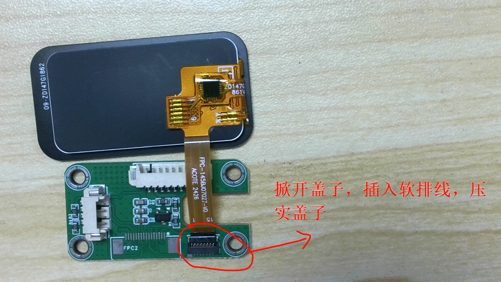</p><h3 data-lake-id="rx1Kb" data-lake-index-type="0" id="rx1Kb"><span data-lake-id="u4c7a7771" id="u4c7a7771">插入屏幕软排线</span></h3><p data-lake-id="u043c9e12" id="u043c9e12">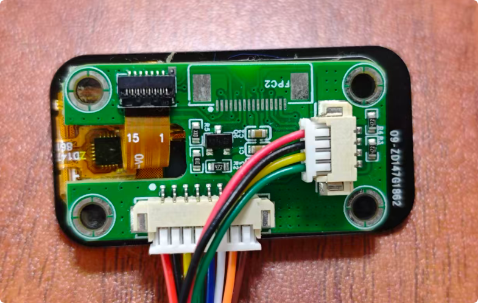</p><p data-lake-id="u4c2decfe" id="u4c2decfe"><br/></p><h3 data-lake-id="ffkFx" data-lake-index-type="0" id="ffkFx"><span data-lake-id="uf327d81a" id="uf327d81a">接上8Pin和4Pin端子</span></h3><p data-lake-id="ue526b4db" id="ue526b4db">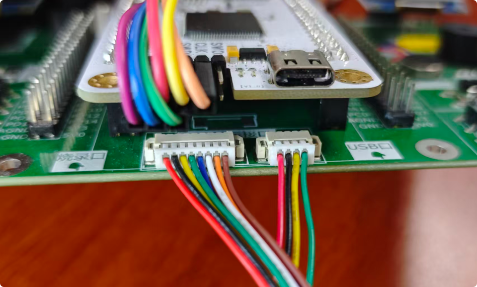</p><p data-lake-id="u2aa5cd95" id="u2aa5cd95"><br/></p><h2 data-lake-id="EqcsE" id="EqcsE"><span data-lake-id="u4bc87059" id="u4bc87059">详细流程</span></h2><article class="lake-columns" data-lake-id="ub83a3c8d" id="ub83a3c8d"><article class="lake-column-item" data-lake-id="u3cd411e5" id="u3cd411e5" style="width: 50.000000%"><p data-lake-id="ua61c71f4" id="ua61c71f4">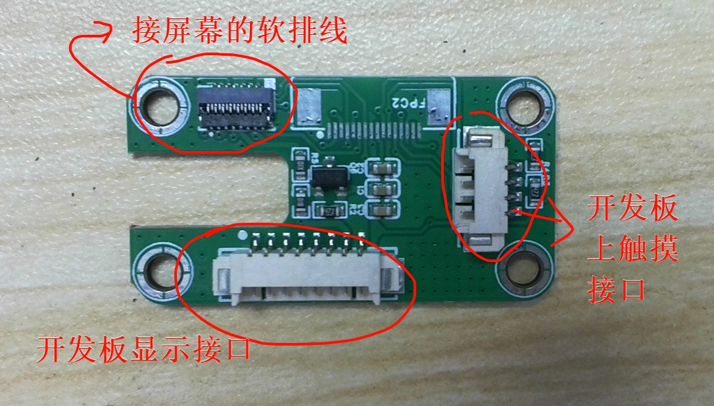</p></article><article class="lake-column-item" data-lake-id="u2b24f67d" id="u2b24f67d" style="width: 50.000000%"><p data-lake-id="ub0b34733" id="ub0b34733">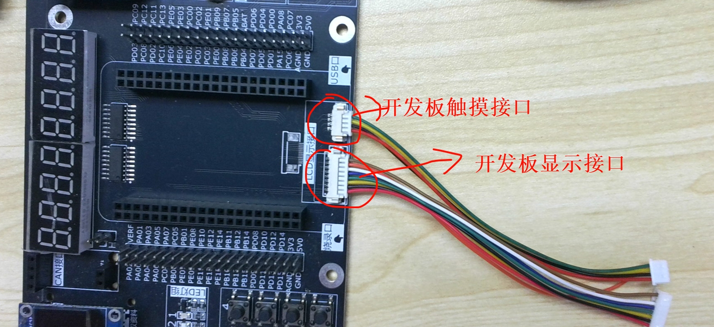</p></article></article><article class="lake-columns" data-lake-id="u8d1cfb93" id="u8d1cfb93"><article class="lake-column-item" data-lake-id="ubec175fb" id="ubec175fb" style="width: 50.000000%"><p data-lake-id="ua5f3a86e" id="ua5f3a86e">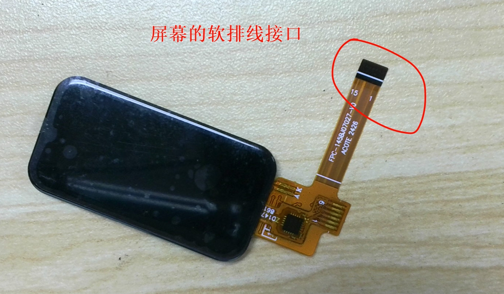</p></article><article class="lake-column-item" data-lake-id="u497d678e" id="u497d678e" style="width: 50.000000%"><p data-lake-id="u5ae5edf7" id="u5ae5edf7">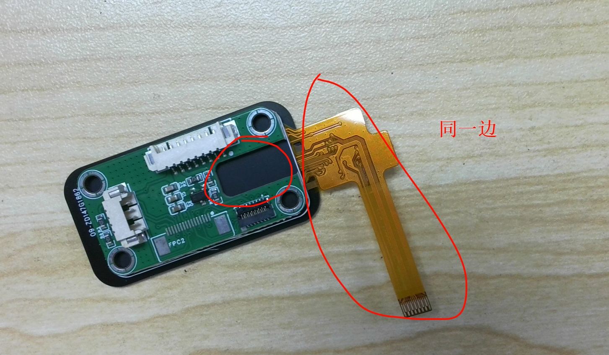</p></article></article><article class="lake-columns" data-lake-id="u3cc876bb" id="u3cc876bb"><article class="lake-column-item" data-lake-id="u7835da5b" id="u7835da5b" style="width: 50.000000%"><p data-lake-id="ua3e316ef" id="ua3e316ef">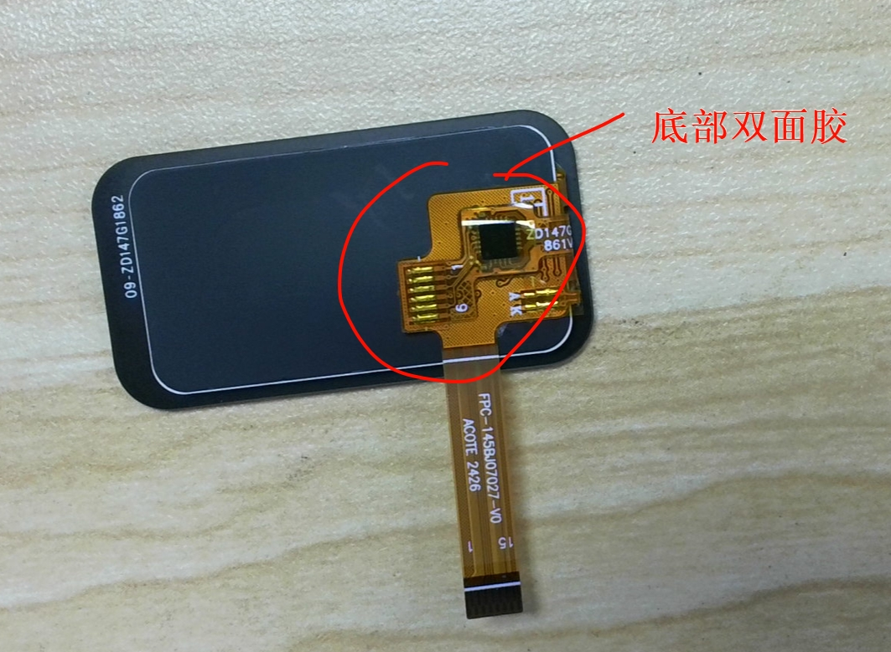</p></article><article class="lake-column-item" data-lake-id="u431499c8" id="u431499c8" style="width: 50.000000%"><p data-lake-id="ub5721147" id="ub5721147"></p></article></article><article class="lake-columns" data-lake-id="ua1716199" id="ua1716199"><article class="lake-column-item" data-lake-id="u0a3bab2b" id="u0a3bab2b" style="width: 50.000000%"><p data-lake-id="ud4d077ff" id="ud4d077ff">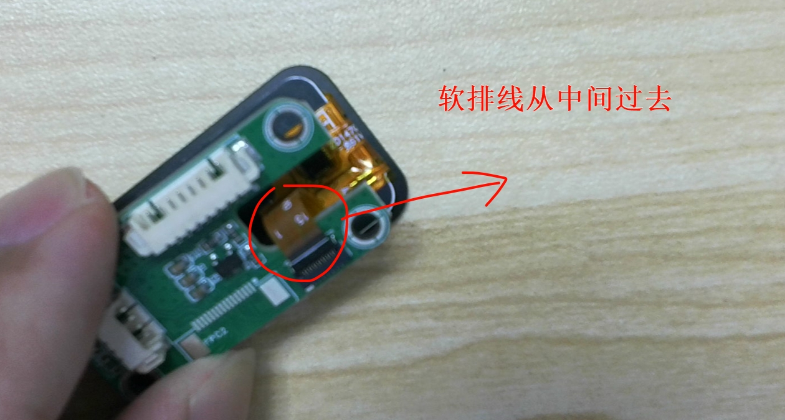</p></article><article class="lake-column-item" data-lake-id="u50cc16ee" id="u50cc16ee" style="width: 50.000000%"><p data-lake-id="ufb903272" id="ufb903272">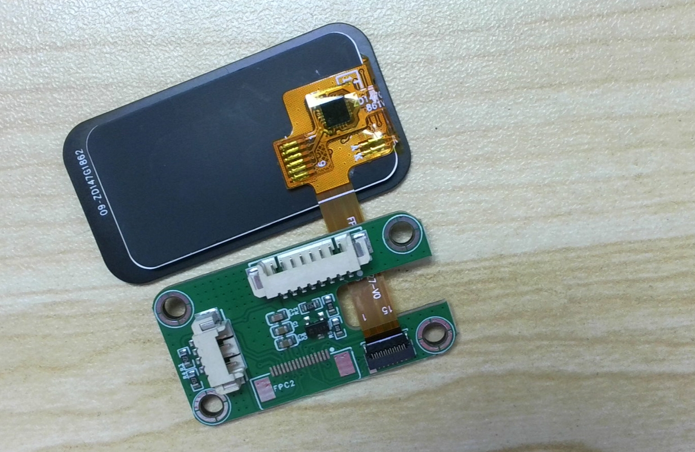</p></article></article><article class="lake-columns" data-lake-id="u784d1fd3" id="u784d1fd3"><article class="lake-column-item" data-lake-id="u27aa74e6" id="u27aa74e6" style="width: 50.000000%"><p data-lake-id="u0d3b97e4" id="u0d3b97e4">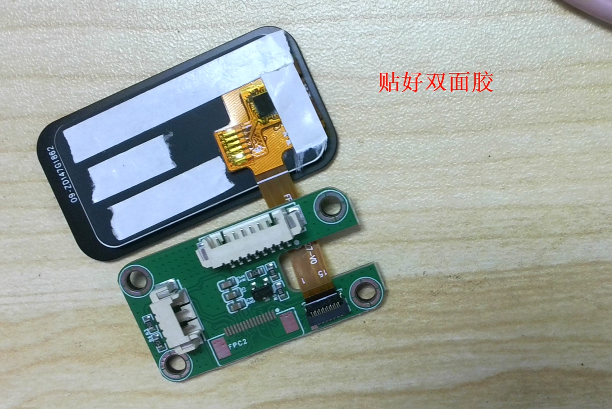</p></article><article class="lake-column-item" data-lake-id="uc666b7ab" id="uc666b7ab" style="width: 50.000000%"><p data-lake-id="ubd55d0d4" id="ubd55d0d4">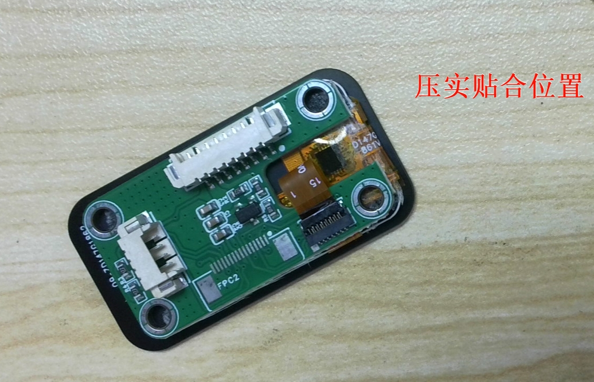</p></article></article>